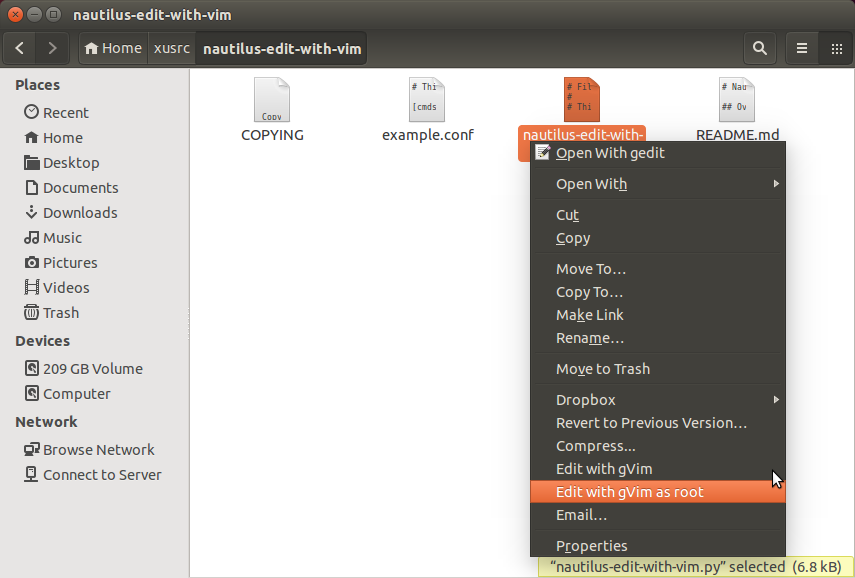
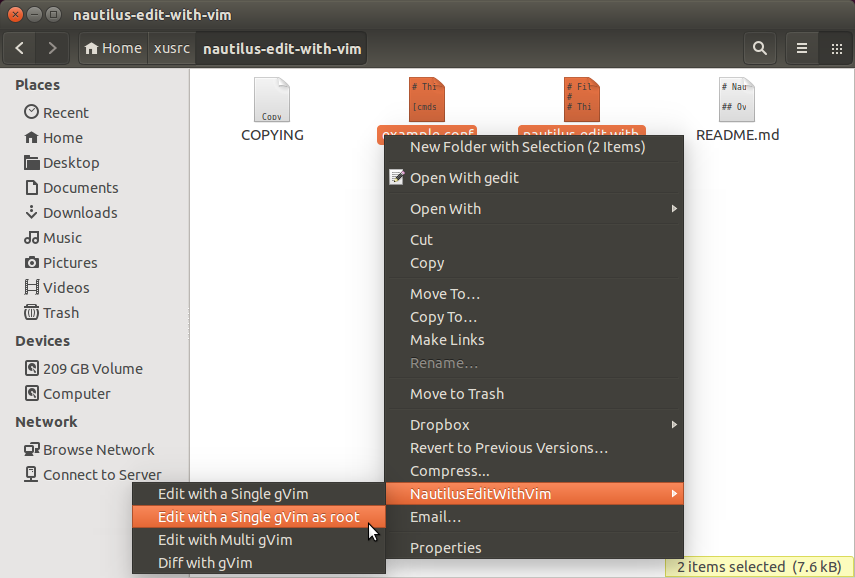

Nautilus-Edit-with-Vim
Overview
Nautilus-Edit-with-Vim is an extension for Nautilus, the GNOME file manager, written in python. This extension adds several menu items in the nautilus right-click context menu for gvim, just like gVim on Windows. This version of the extension works on Nautilus 3.
NOTE: If you are using Nautilus 2, please check out this page.
Screenshots


Downloads and Install
The downloads are available here. Please use version 0.4 or later for Nautilus 3. Versions before 0.4 would only work for Nautilus 2. Check the README for installation and usage details.